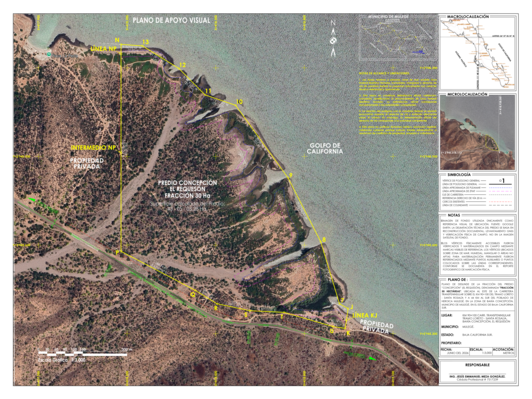
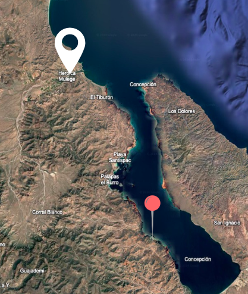
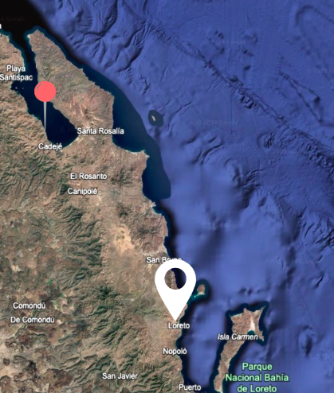
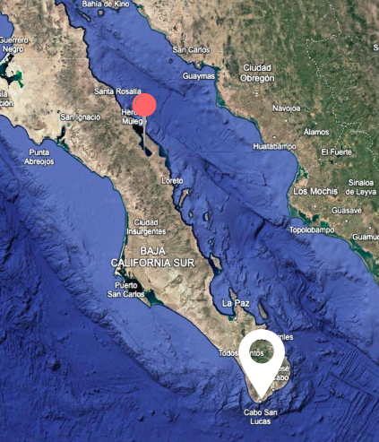

Premium beachfront land on Bahía de la Concepción, Baja California Sur.
Terreno premium frente al mar en Bahía de la Concepción, BCS.
Located in the Sea of Cortez, which Jacques Cousteau once called "the world's aquarium," Bahía de la Concepción is home to a huge variety of sea life, from shellfish like chocolata clams and callo de hacha to whales. Dolphins swim through the bay and sea turtles choose its sandy beaches to lay their eggs.
Water temperature mostly ranges from 72 °F to 86 °F. Add white beaches and crystal clear water and you have a true paradise.
The bay is ideal for water sports including scuba diving, snorkeling, kayaking, paddleboarding, windsurfing and sailing.
It is also a great spot for sport fishing, and the surrounding sierra is perfect for hiking and 4x4 adventures.
Localizada en el Mar de Cortés, al que Jacques Cousteau llamó "el acuario del mundo", Bahía de la Concepción cuenta con una enorme variedad de vida marina que va desde moluscos como la almeja chocolata y el callo de hacha hasta ballenas. Los delfines se pasean por la bahía y las tortugas eligen sus playas para desovar.
La temperatura del agua va generalmente de 22 a 30 °C. Sumado a sus playas blancas y aguas cristalinas, la convierte en un paraíso.
En sus aguas se pueden practicar distintos deportes acuáticos: buceo, esnórquel, kayak, remo, windsurf y vela.
También se practica pesca deportiva y, en la sierra, senderismo y recorridos en 4x4.



